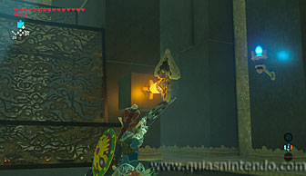

Puedes entrar en este santuario desde que llegas a esta región. Se encuentra muy cerca de la Posta de la llanura.
Una vez dentro, ve a la derecha y verás un interruptor que puedes activar con una flecha.

Al golpearlo se moverá la parte central del santuario y podrás acceder a un cofre por un pasillo a la izquierda que contiene una llave.
Además, quedará a la vista una esfera luminosa. Cógela y déjala enfrente del interruptor (cualquier lugar cerca de la entrada al santuario). Dispara de nuevo al interruptor y recoge la esfera para lanzarla desde un lateral al cajón que hay bajo el interruptor. Después vuelve a disparar al interruptor y la esfera se introducirá en el agujero que activa un mecanismo.
Ese mecanismo hace que un bloque se eleve impulsándote hacia arriba si estás sobre él. Así podrás elevarte y planear para alcanzar el segundo cofre del santuario (contiene una Espada de pluma).
Después vuelve a usar el bloque para elevarte y usa el arco en el aire para apuntar al interruptor. Así conseguirás que la parte central gire mientras tú estás en el aire y al caer, lo harás sobre el camino que te lleva al altar.
Cuando llegues al altar podrás examinarlo para obtener un símbolo de valía.